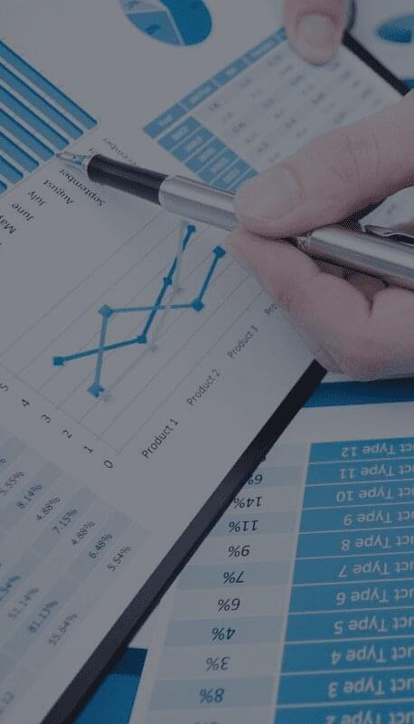

We create truly effective websites: we implement relevant IT-development, we pay maximum attention to design and usability.
About us
Company Future of Software was established in 2022. The goal is high-quality and prompt creation and technical support of websites, microservices, mobile applications and their integration. Project outsourcing, auditing and consulting, reworking other people's codes and previously created sites, improving old projects, fine-tuning databases are just some of the services we offer.
We offer:
Development of sites on Wordpress, 1C-Bitrix and Joomla, Drupal
Building systems based on frameworks: Spring, Laravel, Yii, Zend
Online stores on Opencart and Magento
Website and project support. Our services for managing your resource allows it to function flawlessly, 60% of our clients have been with us for more than 3 years
We will establish all the mechanisms to optimize your advertising budget, an objective assessment and site profitability
Promotion in search engines
Server administration (linux, windows, oracle, postgres, nginx), we will monitor the work of your sites and ensure the stability of any, even the most heavily loaded resources.
The structure of the company.
The company consists of several departments (teams) specializing in a particular direction. Currently:
Java development department on frameworks
PHP development department on frameworks
Development department at CMS
Android development department
Internet marketing department
Services
Website development
Order the creation of turnkey selling websites on favorable terms! Our digital agency offers low prices and high quality projects of varying complexity: business card sites, online stores, corporate portals. We have created dozens of websites for commercial companies - use the services of experienced developers who follow global trends in design, programming, usability and SEO optimization.
Support site
It doesn’t matter what kind of website you have: a business card or an entire online store with an extensive group of products, website support is necessary in order to keep your web resource in good condition. Judge for yourself: You created a corporate website, but later it became necessary to add an image or a couple of articles, change the font or place a video. Who will be doing this? There are two options here: study the content management system and make all the changes yourself, or entrust it to professionals who have been engaged in technical support for more than 5 years.
Analytics integration
Set up Google Universal Analytics End-to-End and save up to 60% on advertising budget optimization The main advantage of end-to-end analytics is a clear indicator of the effectiveness of your key phrases in each of the advertising campaigns.

Promotion
The specialist analyzes search results and main competitors by a large number of parameters (ranking factors). Makes recommendations for improving the site and finalizing individual pages. By making changes yourself or with our help, you will improve the position of the site in search engines and increase the number of hits from the search.
Application development
Our team realizes the wishes of the client in full. Terms and costs do not change. You can entrust the development of the application to a freelancer, but in this case, no one guarantees the achievement of the desired result. Force majeure occurs at all stages of cooperation with a private contractor. Often, freelancers delay deadlines without an objective reason or refuse to cooperate already in the process of work. If an unprofessional approach is unacceptable for you, then we are ready to fulfill your order.
Applications for IOS
Applications for Android
Applications on Backbone
MongoDB Applications
DBMS Redis
Web Development with Express
Tech support
To make your website profitable it should work without any failures 24 hours a day, as well as be updated regularly and be interesting to the user. If it is not possible to achieve the technical requirements, then the usefulness and commercial benefit from the development of the site may be significantly reduced. It doesn’t matter what kind of website you have: a business card or an entire online store with an extensive group of products, website maintenance is necessary in order to keep your web resource in good condition. Judge for yourself: You created a corporate website, but later it became necessary to add an image or a couple of articles, change the font or place a video. Who will be doing this? There are two options here: study the content management system and make all the changes yourself, or entrust it to professionals who have been engaged in technical support for more than 5 years.
Seo
The site, which is on the first lines in the issuance of search engines, brings the company maximum profit. The promotion strategy in Google and Yandex is developed based on the data obtained as a result of the audit. Complex creation of sites with further promotion in search engines is the main focus of Soft Media Group. SEO promotion of business card sites includes:
Compilation of the semantic core and site structure
Filling pages with SEO-optimized content
Compilation of optimized meta-data (title, description)
Correct setting for handling 404 errors
Setting the correct filling of rel canonical (to prevent duplicates from getting into the index of search engines)
Setting up dynamic filling of the sitemap.xml file
Correct filling of robots.txt
Setting technical parameters: site loading speed, code validity and mobile layout
Server administration
We support projects of any complexity, including high-load sites with millions of daily visitors. We support servers running CentOS, Debian, Ubuntu, as well as server versions of Windows. Starting to work with us, you will forget about the problems with your projects caused by their unstable work. All work is carried out without restrictions on hours and tasks at a single rate without hidden fees.
Stages of creation and custom website development:
Meeting, filling out a brief, getting to know each other
Target audience and market analysis
Prototyping and validating the structure
Design and interface development
Programming and layout
Testing solutions, editing the functional part
Content management, website development
Testing the finished site, connecting to the domain
Promotion in Google and Yandex
There are practically no secondary stages in the process of creating a site, because only a comprehensive study of all the details gives a good result! Therefore, website design is just as important as coding. For example, launching a new product on the market requires a bright, unique and memorable design. A competent choice and configuration of the site management system will allow your company's employees to quickly and easily update the site materials and customize its functions. If you do not have such an employee, you can use our service "Site Maintenance". Or you can rent a ready-made site.